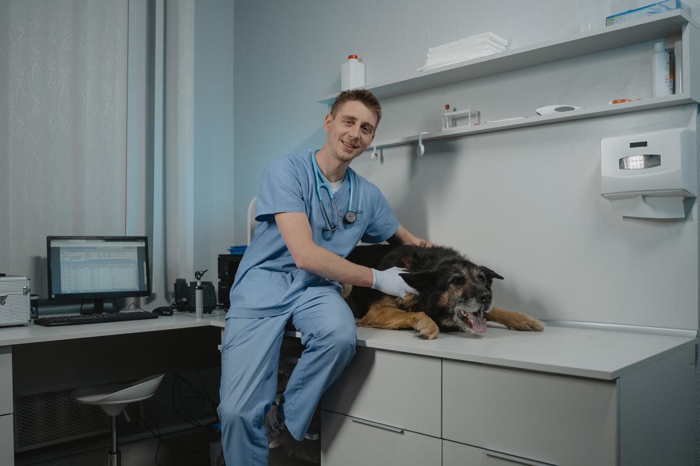
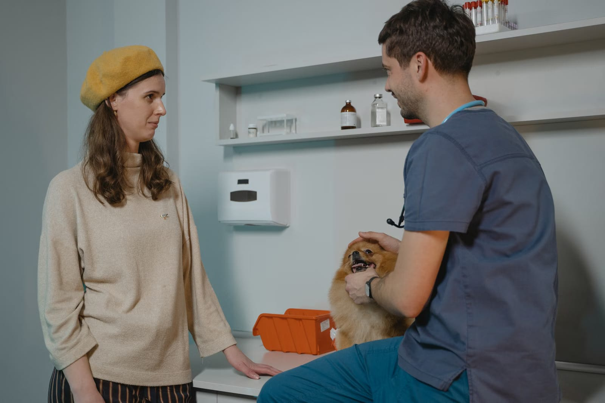
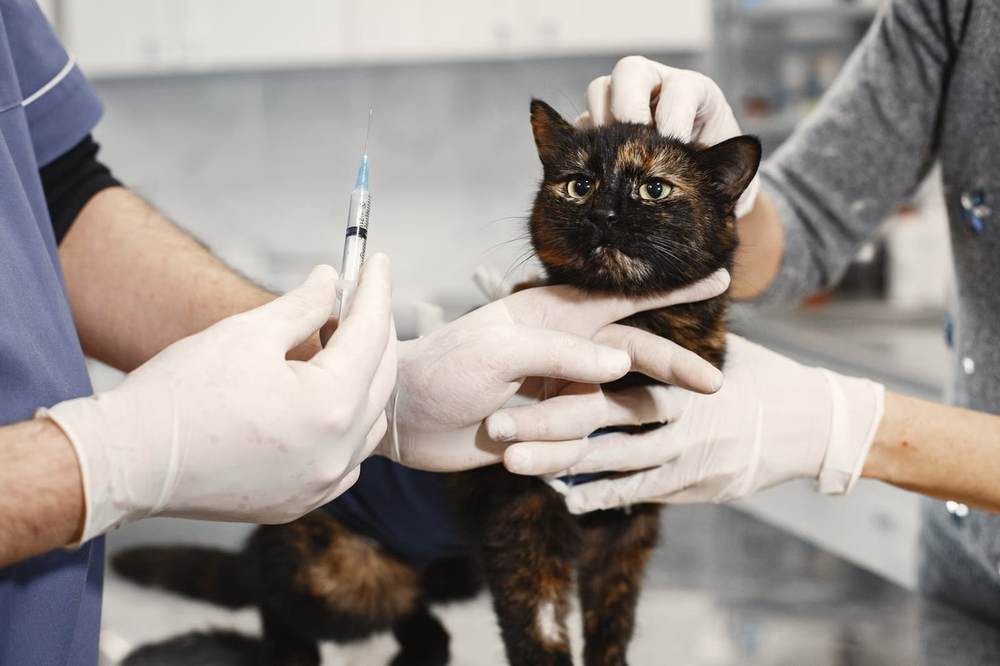

Vet Anka'da sizi her seferinde aynı iki hekim karşılar. Muayeneden aşı takvimine kadar dostunuzun bütün geçmişini bilen bir ekip.

Dostunuzun dosyasını, huyunu ve geçmişini bilen hekimlerle konuşursunuz; her ziyarette baştan anlatmanız gerekmez.
Vet Anka Veteriner Kliniği, Sefaköy
Vet Anka Veteriner Kliniği, Sefaköy

Hizmet ve fiyat bilgisi için telefonla ya da WhatsApp'tan ulaşabilirsiniz.
Kedi ve köpekler için sağlık kontrolü ve iç hastalıkları muayenesi.
Yavru ve yetişkin aşıları; bir sonraki aşı tarihini birlikte planlarız.
İç ve dış parazit koruması, düzenli takip.
Mama, kilo ve bakım konusunda dostunuza özel öneriler.

Randevu, aşı hatırlatması ya da aklınıza takılan bir soru için arayın veya yazın.